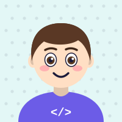

Мій власний аватарНамалюй себе в конструкторі аватарів і постав малюнок на фото профілю в Google. Це буде твій власний твір — ти його автор.
Твій аватар з'явиться в Google Classroom, Gmail і на Диску — скрізь, де ти входиш зі своїм обліковим записом.
Аватар має розповідати про тебе: схожа зачіска, улюблений колір, твоє хобі чи улюбленець. Щоб друзі одразу впізнали — це ти!
Натисни — файл avatar.png з'явиться в теці Завантаження.
Посунь рамку, щоб обличчя було в центрі кола, і натисни .
Онови сторінку Google Classroom.